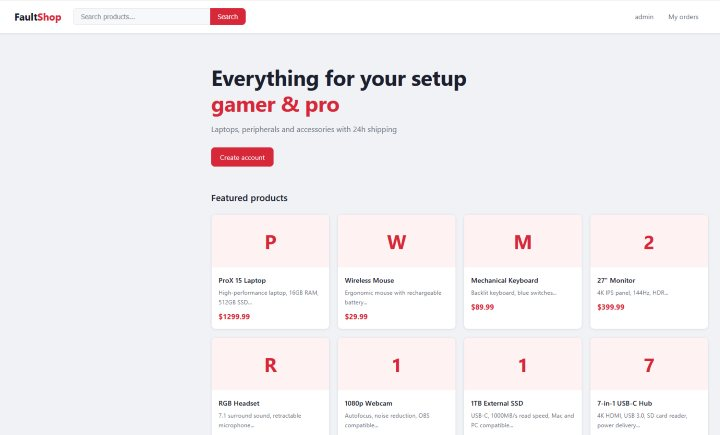

Cesar Ramiro Beltrán
Cybersecurity Professor & Researcher · IT Cloud Engineer Specialist
Engineer specialized in on-premise and cloud enterprise infrastructure security, with research in digital forensics, incident response and autonomous vehicle security. Professor of information security, ethical hacking and operating systems at Universidad El Bosque.
01.
About me
$ whoamicesarbeltran · cloud · forensics · research · teaching
I am an Electronic Engineer from Universidad Cooperativa de Colombia, hold a Specialization in Telematics Network Security from Universidad El Bosque, and earned a Master's in Digital Security from Pontificia Universidad Javeriana, where I graduated Cum Laude.
I have extensive experience in enterprise IT infrastructure, including Windows Server and Linux administration, virtualization with VMware, Hyper-V and Oracle VM, and cloud services on Microsoft Azure and Microsoft 365. I complement this experience with knowledge of penetration testing, ethical hacking, digital forensics, technology risk management and the ISO/IEC 27001 standard.
I currently work as an IT Cloud Engineer Specialist at Inchcape Digital, where I focus on cloud security: security controls, vulnerability management, and identity and access management. I am also a professor in the Faculty of Engineering at Universidad El Bosque, where I teach information security and ethical hacking.
02.
Skills
Offensive Security
Forensics & Response
Cloud
Infrastructure
Virtualization & Backup
Risk & Governance
03.
Research
Cybersecurity and Autonomous Vehicles
Threats, attack surfaces and defenses for connected autonomous vehicles.
Digital Forensics Applied to Critical Systems
Forensic methods for on-premise and cloud environments, and incident response labs.
Vulnerability Analysis in Enterprise Systems
Assessment of enterprise systems and technology risk using structured methodologies.
04.
Publications
I publish as Cesar R. Beltrán-Hernández · ORCID 0000-0001-8399-2989 · Google Scholar · CvLAC
05.
Projects

FaultShop
OWASPListed in the Vulnerable Web Applications Directory
A deliberately vulnerable online store for practicing ethical web hacking. Unlike classic labs, it covers current threats based on the OWASP Top 10:2025 and OWASP API Security Top 10:2023, with 18 documented vulnerabilities ranging from SQLi and XSS to SSRF, IDOR and unauthenticated API endpoints. Designed as a hands-on resource for information security and ethical hacking courses.
06.
Experience
Cloud security on Microsoft Azure: implementation and monitoring of security controls, vulnerability management, and identity and access management.
On-premise and cloud IT infrastructure administration: Microsoft Azure services, Windows Server and Linux servers, and Microsoft 365 administration.
Administration of Windows Server and Linux systems. Active Directory, SMTP, WSUS, RDS, and virtualization on VMware and Hyper-V.
Support and administration of Linux and Windows Server systems (Level 1-2). DNS zone management and hardware support for HP ProLiant, Lenovo ThinkSystem, and Dell PowerEdge servers.
Operations for Veritas NetBackup and HP Data Protector. Backup and restore for Windows, Linux, VMware, Hyper-V, and databases: Oracle, MS Exchange, MS SQL, MySQL, SAP.
- Since 2023Diploma Course: Information Security and Ethical Hacking (every year)
- 2026Information Security · Operating Systems
- 2025Information Security
- 2023Digital Systems and Computer Architecture
As part of a teaching and research scholarship: taught classes, organized academic activities, supported the coordination of the cybersecurity and digital forensics research group, and co-wrote a research article.
07.
Education
Master's in Digital Security
Teaching and research scholarship, WhiteLab Research Group.
Specialization in Telematics Network Security
Electronic Engineering
Thesis: Development of an instrument for patterning thermal sensors using linear regression.
08.
Let's talk
Open to research collaborations, academic projects and conversations about cybersecurity, digital forensics and cloud infrastructure.